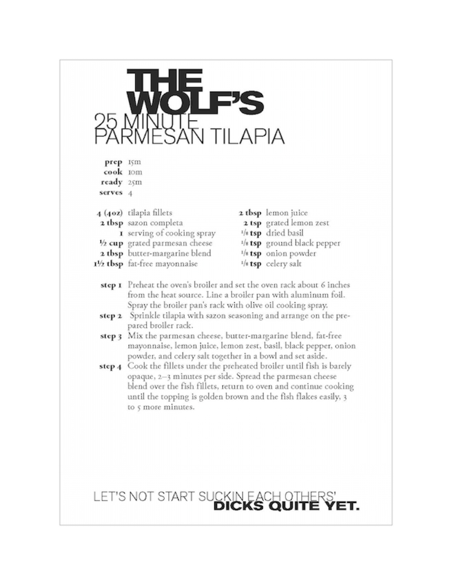

THE WOLF'S
25 MINUTE PARMESAN TILAPIA
- prep 15m
- cook 10m
- ready 25m
- serves 4
- 4 (4oz) tilapia fillets
- 2 tbsp sazon completa
- 1 serving of cooking spray
- 1/2 cup grated parmesan cheese
- 2 tbsp butter-margarine blend
- 1 1/2 tbsp fat free mayonnaise
- 2 tbsp lemon juice
- 2 tsp grated lemon zest
- 1/8 tsp dried basil
- 1/8 tsp onion powder
- 1/8 tsp celery salt
- step 1 instructions
- step 2 instructions
- step 3 instructions
- step 4 instructions
